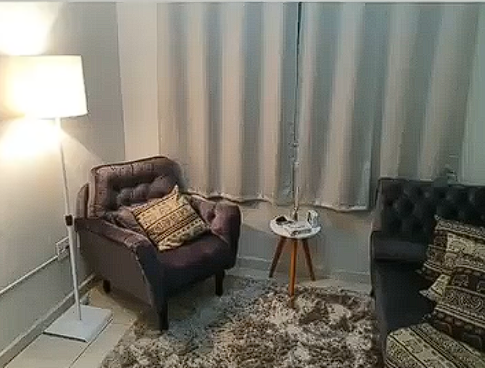
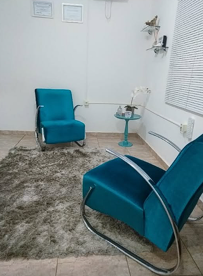

Larissa Salmazo da Silva
Psicologia & Avaliação Pericial
Avaliações Periciais de Trânsito e Armas de Fogo, Recrutamento & Seleção corporativo, Avaliações Psicossociais e Laudos para Cirurgias em Jardinópolis-SP.
Perícia & Precisão
Trânsito e Porte de Armas
Larissa Salmazo da Silva
CRP 06/155939
LSS
Clínica Psicólogica
Ciência, ética e compromisso técnico em cada avaliação.
Olá! Sou Larissa Salmazo da Silva (CRP 06/155939), psicóloga responsável pela LSS Clínica Psicólogica em Jardinópolis-SP.
Atuo com dedicação e rigor técnico oferecendo serviços especializados de Avaliação Pericial para condutores de trânsito e manuseio/porte de armas de fogo, utilizando metodologias oficiais reconhecidas pelos órgãos competentes.
Na área corporativa, presto assessoria em Recrutamento e Seleção de pessoas, auxiliando empresas no mapeamento e contratação dos melhores talentos. Além disso, realizo Avaliações Psicossociais ocupacionais e elaboração de laudos psicológicos para procedimentos cirúrgicos (bariátrica, laqueadura, vasectomia, entre outros).
Avaliações Periciais Rigorosas
Testes psicológicos homologados para avaliação de trânsito e porte de armas de fogo com rápida devolutiva.
Soluções para Empresas & Pessoas
Processos seletivos eficientes e avaliações psicossociais alinhadas às normas regulamentadoras.
Nossa Atuação na LSS Clínica Psicólogica
Soluções completas em avaliação psicológica pericial, consultoria em gestão de pessoas e laudos técnicos.
Avaliação Pericial - Trânsito & Armas de Fogo
Exames psicológicos periciais para obtenção, renovação e alteração de categoria da CNH, além de avaliação de aptidão mental para posse, porte e manuseio de armas de fogo (CACs, porte civil e segurança privada).
Agendar AvaliaçãoRecrutamento e Seleção
Processos seletivos customizados para empresas. Mapeamento de perfil comportamental, aplicação de testes psicológicos e entrevista por competências para contratações assertivas.
Solicitar OrçamentoAvaliação Psicossocial
Avaliação exigida por normas regulamentadoras (como NR-33 e NR-35) para profissionais que atuam em espaços confinados, altura e ambientes de risco, assegurando a saúde ocupacional.
Saiba MaisLaudos para Cirurgias
Avaliação e emissão de laudo psicológico para cirurgias eletivas e pré-operatórios, como bariátrica, laqueadura, vasectomia e cirurgias plásticas, com fundamentação técnica e acolhimento.
Agendar LaudoAtendimento Psicologia Clínica
Acompanhamento psicoterapêutico individual na LSS Clínica Psicólogica, focado no autoconhecimento, resolução de conflitos, gestão de ansiedade e saúde mental integrativa.
Agendar ConsultaConsultoria em Gestão de Pessoas
Diagnóstico organizacional e consultoria direcionada para retenção de talentos, alinhamento de equipes e desenvolvimento de lideranças.
Falar ConoscoLSS Clínica Psicólogica
Estrutura localizada em Jardinópolis-SP planejada para garantir total privacidade, conforto e precisão em todas as avaliações.


Por que escolher a LSS Clínica Psicólogica?
Avaliações e processos conduzidos com rigor científico, sigilo e agilidade.
Testes Homologados
Utilização de instrumentos de avaliação psicológica reconhecidos e validados pelo SATEPSI / CFP.
Agilidade & Pontualidade
Emissão ágil de laudos periciais, psicossociais e para cirurgias com cumprimento rigoroso de prazos.
Expertise em Recrutamento
Estratégia sob medida para empresas na seleção dos melhores profissionais e mapeamento de perfil.
Atendimento Direto
Comunicação facilitada via WhatsApp para tirar dúvidas e agendar seu horário com rapidez.
O que dizem nossos clientes e pacientes
Relatos de quem realizou avaliações ou contratou nossos serviços em Jardinópolis e região.
"Fiz minha avaliação para o porte de arma com a Larissa. O atendimento foi impecável, extremamente profissional e transparente. Super recomendo a LSS Clínica Psicólogica!"
"Contratamos o serviço de Recrutamento e Seleção da Larissa para nossa empresa e a qualidade das contratações aumentou significativamente. Mapeamento de perfil certeiro."
"Precisei do laudo psicológico pré-operatório para minha cirurgia e fui atendida com muita atenção e agilidade pela Larissa. Me senti totalmente acolhida."
Perguntas Frequentes
Esclareça suas dúvidas sobre avaliações periciais, recrutamento e atendimentos.
Fale com a Larissa Salmazo
Entre em contato para agendar sua avaliação, consulta ou solicitar uma proposta para a sua empresa.
Endereço da Clínica
R. Anice Rassi, 78
Jardinópolis - SP, CEP 14680-000
WhatsApp / Telefone
Registro Profissional
Larissa Salmazo da Silva - CRP 06/155939